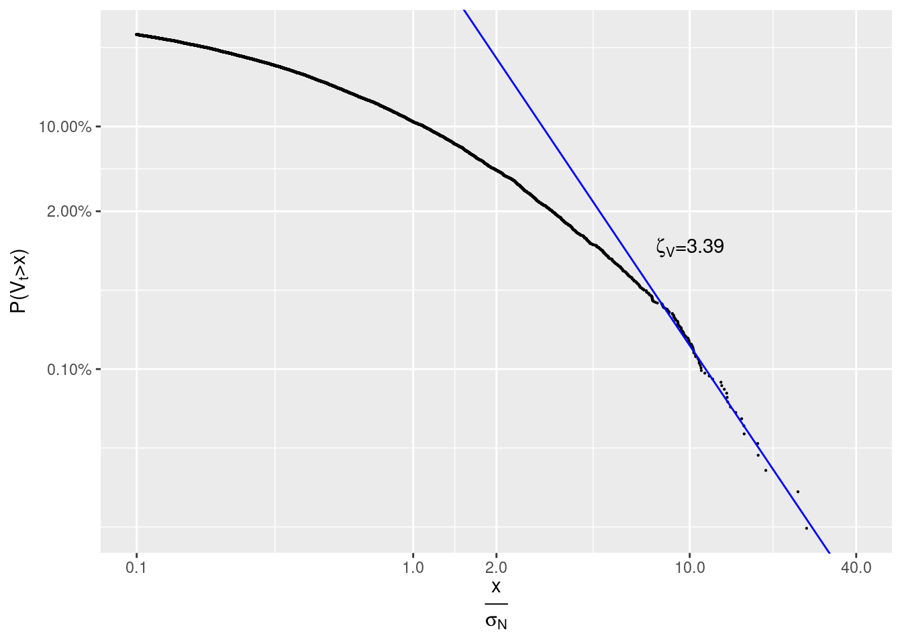
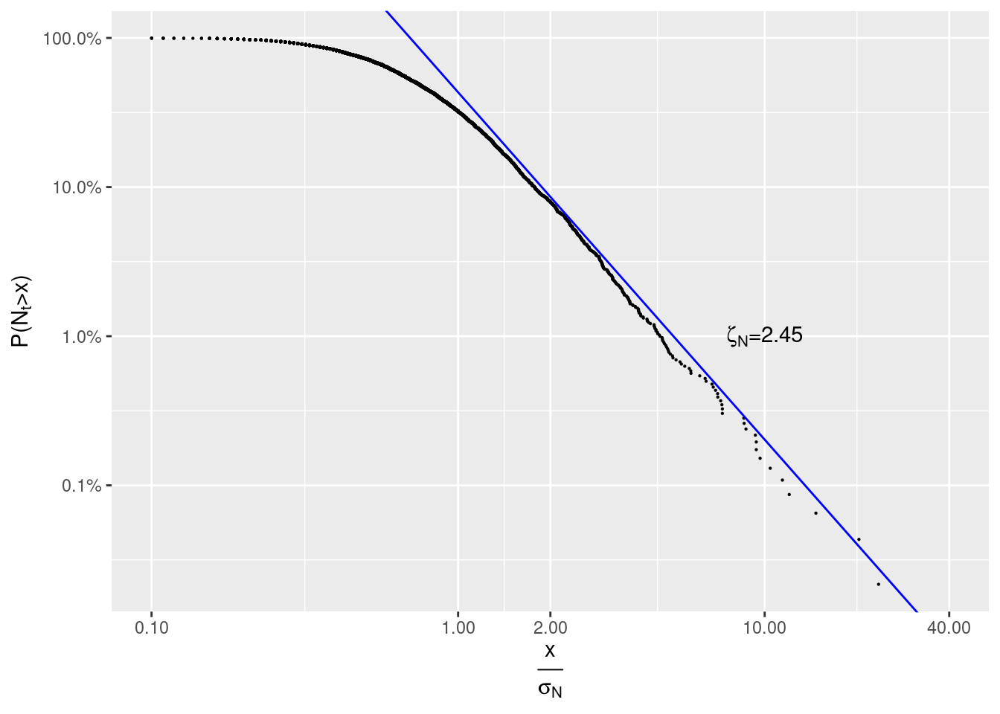
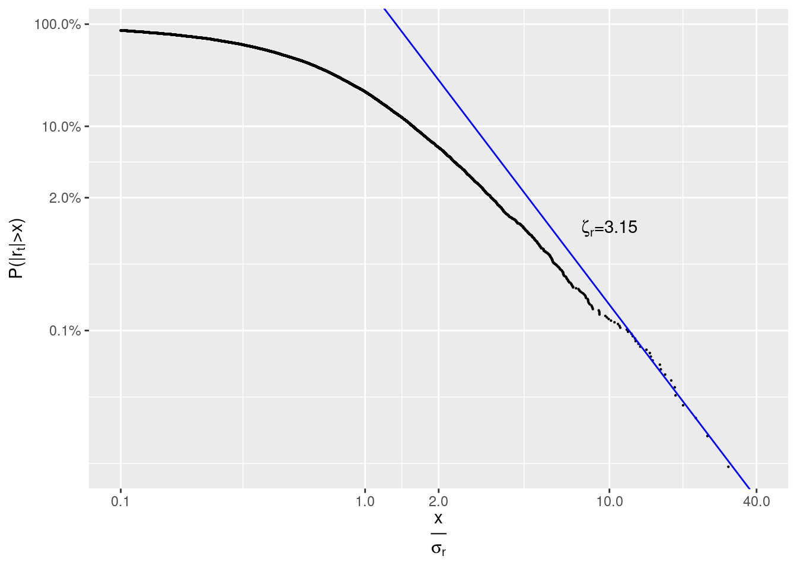

According to [1]:
Power laws appear to describe histograms of relevant financial fluctuations, such as fluctuations in stock price, trading volume and the number of trades. Surprisingly, the exponents that characterize these power laws are similar for different types and sizes of markets, for different market trends and even for different countries—suggesting that a generic theoretical basis may underlie these phenomena.
Let’s check whether these exponents are similar for cryptocurrencies too. Spoiler: not always.
In [1] we read:
Empirical studies … show that the distribution of trading volume \(V_t\) obeys a … power law: \[ P(V_t > x) \sim x^{-\zeta_V}\] with \(\zeta_V \approx 1.5\), while the number of trades \(N_t\) obeys: \[ P(N_t > x) \sim x^{-\zeta_N}\] with \(\zeta_N \approx 3.4\)
First let’s load all trades for LTCUSD pair traded at Bitstamp from 2019-02-01 00:00:00+03 till 2019-09-17 00:00:00+03:
trades <- obadiah::trades(con,
'2019-02-01 00:00:00+03',
'2019-09-17 00:00:00+03',
'Bitstamp',
'LTCUSD',
cache=cache, tz='Europe/Moscow') %>%
select(-maker.event.id, -taker.event.id)
kable(head(trades))| timestamp | price | volume | direction | maker | taker | exchange.trade.id |
|---|---|---|---|---|---|---|
| 2019-02-01 00:04:08.3971 | 31.28 | 0.5851052 | buy | 2814151777 | 2814151901 | 82145385 |
| 2019-02-01 00:17:46.8451 | 31.26 | 72.1700000 | buy | 2814188413 | 2814190362 | 82145682 |
| 2019-02-01 00:17:47.5039 | 31.26 | 25.4422370 | sell | 2814190362 | 2814190392 | 82145683 |
| 2019-02-01 00:17:49.1047 | 31.19 | 7.2058347 | sell | 2814190401 | 2814190371 | 82145684 |
| 2019-02-01 00:18:57.6547 | 31.27 | 0.3000000 | buy | 2814190510 | 2814193203 | 82145698 |
| 2019-02-01 00:42:32.9018 | 31.19 | 2.1663516 | sell | 2814264503 | 2814266233 | 82146060 |
We need only real trades, i.e. those having exchange.trade.id set and only timestamp and volume columns:
trades <- trades %>%
filter(!is.na(exchange.trade.id)) %>%
select(timestamp, volume, price, direction, exchange.trade.id)
kable(head(trades))| timestamp | volume | price | direction | exchange.trade.id |
|---|---|---|---|---|
| 2019-02-01 00:04:08.3971 | 0.5851052 | 31.28 | buy | 82145385 |
| 2019-02-01 00:17:46.8451 | 72.1700000 | 31.26 | buy | 82145682 |
| 2019-02-01 00:17:47.5039 | 25.4422370 | 31.26 | sell | 82145683 |
| 2019-02-01 00:17:49.1047 | 7.2058347 | 31.19 | sell | 82145684 |
| 2019-02-01 00:18:57.6547 | 0.3000000 | 31.27 | buy | 82145698 |
| 2019-02-01 00:42:32.9018 | 2.1663516 | 31.19 | sell | 82146060 |
There are 621,605 real trades in total. Let’s calculate a trading volume and number of trades per 15 min period:
by_period <- trades %>%
mutate(period_end=ceiling_date(timestamp, '15 min')) %>%
mutate(volume=replace_na(volume, 0), price=replace_na(price, 0)) %>%
group_by(period_end) %>%
summarize(volume=sum(volume), number.of.trades=sum(!is.na(timestamp)))
knitr::kable(head(by_period))| period_end | volume | number.of.trades |
|---|---|---|
| 2019-02-01 00:15:00 | 0.5851052 | 1 |
| 2019-02-01 00:30:00 | 105.1180717 | 4 |
| 2019-02-01 00:45:00 | 3.9536516 | 2 |
| 2019-02-01 01:00:00 | 497.6865034 | 5 |
| 2019-02-01 01:15:00 | 46.1096915 | 1 |
| 2019-02-01 01:30:00 | 332.2872609 | 5 |
We can now caclulate Complementary cumulative distribution function (tail distribution) for a trading volume per period \(P(V_t > x)\):
V <- by_period %>%
arrange(-volume) %>%
mutate(r=row_number()) %>%
mutate(prob=r/max(r), sigma=volume/sd(volume)) %>%
filter(sigma >= 0.1)
s_i <- coef(lm(log10(prob) ~ log10(sigma), V %>% filter(sigma >=10)))
zeta_V <- -s_i[2]\(x\) is measured in units of sample standard deviation of volume: \(\sigma_V =\)sd(volume) \(\approx\) 1442.93.
ggplot(V , aes(sigma, prob)) +
geom_point(size=0.1) +
scale_y_log10(TeX('$P(V_t > x)$'),
breaks=c(0.001, 0.02, 0.1, 1),
labels=scales::percent) +
scale_x_log10(TeX('$\\frac{x}{\\sigma_N$}'),
breaks=c(0.1, 1,2,10, 100,40),
limits=c(0.1, 40),
labels=scales::number_format(0.1)) +
geom_abline(slope=-zeta_V, intercept=s_i[1], colour="blue") +
annotate("text",
x=10,
y=0.01,
label=TeX(paste0('$\\zeta_V=',round(zeta_V,2),'$'), output = "character"),
parse=TRUE)
We see that \(\zeta_V=3.39 \neq 1.5\).
For a number of trades per period \(P(N_t > x)\) we have:
N <- by_period %>%
arrange(-number.of.trades) %>%
mutate(r=row_number()) %>%
mutate(prob=r/max(r), sigma=number.of.trades/sd(number.of.trades), category='N') %>%
filter(sigma > 0.1)
s_i <- coef(lm(log10(prob) ~ log10(sigma), N %>% filter(sigma >=9)))
zeta_N <- -s_i[2]Again, \(x\) is measured in units of sample standard deviation of number.of.trades: \(\sigma_N =\)sd(number.of.trades) \(\approx\) 61.87.
ggplot(N , aes(sigma, prob)) + geom_point(size=0.1) +
scale_y_log10(TeX('$P(N_t > x)$'),
breaks=c(0.001, 0.01, 0.1, 1),
labels=scales::percent) +
scale_x_log10(TeX('$\\frac{x}{\\sigma_N$}'),
breaks=c(0.1, 1, 2, 10, 40),
limits=c(0.1, 40),
labels=scales::number_format(0.01)) +
geom_abline(slope=-zeta_N, intercept=s_i[1], colour="blue") +
annotate("text",
x=10,
y=0.01,
label=TeX(paste0('$\\zeta_N=',round(zeta_N,2),'$'), output = "character"),
parse=TRUE)
We see that \(\zeta_N=3.62 \approx 3.4\).
In [1] we read:
Define \(p_t\) as the price of a given stock and the stock price ‘return’ \(r_t\) as the change of the logarithm of stock price in a given time interval \(\Delta t\), \(r_t \equiv \ln p_t - \ln p_{t -\Delta t}\). The probability that a return has an absolute value larger than \(x\) is found empirically to be: \[ P(| r_t | > x) \sim x^{-\zeta_r} \tag{1}\] with \(\zeta_r \approx 3\). The ‘inverse cubic law’ of equation (1) is rather ‘universal’, holding over as many as 80 standard deviations for some stock markets, with \(\Delta t\) ranging from one minute to one month, across different sizes of stocks, different time periods, and also for different stock market indices.
Let’s load spreads at the end of every 15 min interval for LTCUSD pair traded at Bitstamp from 2019-02-01 00:00:00+03 till 2019-09-17 00:00:00+03. Since there are too many of them to be loaded at once, we will process them by time ranges:
ranges <- tibble(s=with_tz(seq(ymd_hms('2019-02-01 00:00:00+03'), ymd_hms('2019-09-17 00:00:00+03'), by="1 week"), tz="Europe/Moscow"))
ranges$e <- c(tail(ranges$s, -1),ymd_hms('2019-09-17 00:00:00+03'))
kable(head(ranges))| s | e |
|---|---|
| 2019-02-01 | 2019-02-08 |
| 2019-02-08 | 2019-02-15 |
| 2019-02-15 | 2019-02-22 |
| 2019-02-22 | 2019-03-01 |
| 2019-03-01 | 2019-03-08 |
| 2019-03-08 | 2019-03-15 |
We will use a mid-price (best bid price plus best ask price divided by two) as a proxy for \(p_t\):
by_period <- ranges %>% rowwise() %>% do({
obadiah::spread(con, .$s, .$e, 'Bitstamp', 'LTCUSD', by.interval=duration('15 min'), cache=cache, tz='Europe/Moscow') %>%
mutate(price=(best.ask.price+best.bid.price)/2) %>% # mid-price
select(timestamp, price)
}) %>%
ungroup() %>%
fill(price) %>%
mutate(abs_r=abs(log(price) - log(lag(price)))) %>%
filter(!is.na(abs_r))
kable(head(by_period))| timestamp | price | abs_r |
|---|---|---|
| 2019-02-01 00:15:00 | 31.235 | 0.0001601 |
| 2019-02-01 00:30:00 | 31.215 | 0.0006405 |
| 2019-02-01 00:45:00 | 31.220 | 0.0001602 |
| 2019-02-01 01:00:00 | 31.200 | 0.0006408 |
| 2019-02-01 01:15:00 | 31.175 | 0.0008016 |
| 2019-02-01 01:30:00 | 31.230 | 0.0017627 |
R <- by_period %>%
arrange(-abs_r) %>%
mutate(r=row_number()) %>%
mutate(prob=r/max(r), sigma=abs_r/sd(abs_r)) %>%
filter(sigma >= 0.1)
s_i <- coef(lm(log10(prob) ~ log10(sigma), R %>% filter(sigma >=11)))
zeta_r <- -s_i[2]
\(x\) is measured in units of sample standard deviation of abs_r: \(\sigma_r =\)sd(abs_r) \(\approx\) 0.0046.
ggplot(R , aes(sigma, prob)) +
geom_point(size=0.1) +
scale_y_log10(TeX('$P(|r_t| > x)$'),
breaks=c(0.001, 0.02, 0.1, 1),
labels=scales::percent) +
scale_x_log10(TeX('$\\frac{x}{\\sigma_r$}'),
breaks=c(0.1, 1,2,10, 100,40),
limits=c(0.1, 40),
labels=scales::number_format(0.1)) +
geom_abline(slope=-zeta_r, intercept=s_i[1], colour="blue") +
annotate("text",
x=10,
y=0.01,
label=TeX(paste0('$\\zeta_r=',round(zeta_r,2),'$'), output = "character"),
parse=TRUE)
Again we see that \(\zeta_r=3.15 \approx 3\).
[1] Gabaix, X., Gopikrishnan, P., Plerou, V. and Stanley, H. E. (2003). A theory of power-law distributions in financial market fluctuations. Nature 423 267–70.